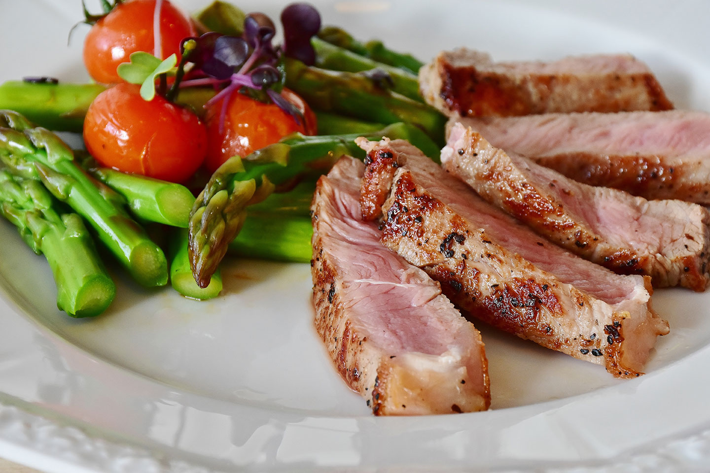
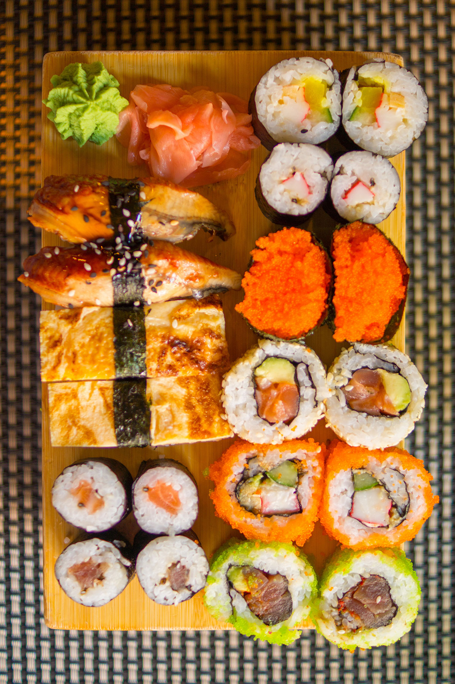

Leer de nieuwste recepten en
verwen jezelf en je gasten!
Voor elke smaak is er
iets te vinden.
Leer de nieuwste recepten en
verwen jezelf en je gasten!
Voor elke smaak is er
iets te vinden.
Lees waar de steak, entrecote, ossenhaas en ribeye precies vandaan komen. Elk deel van de koe heeft zijn eigen malsheid en stevigheid. Ontdek welk stuk vlees de slager het liefst voor zichzelf houdt...
Zelf sushi maken is even een werkje en ook het koken van de sushirijst moet je niet onderschatten. Ook de cuisine redactie gaat regelmatig thuis aan de slag met de vellen nori en schaaltjes sojasaus.



Cuisine geeft al kookboeken uit sinds 1977. In de webwinkel zijn kookboeken te vinden in alle categorieën en uit alle delen van de wereld, in verschillende talen.
Boeken die niet in de winkel op voorraad zijn kunnen, mits leverbaar, overal ter wereld worden besteld. Er worden rechtstreeks boeken geïmporteerd uit landen als Egypte, Iran en India. Wekelijks komen, behalve uit Nederland, nieuwe boeken binnen uit Engeland, Amerika en Frankrijk.
Cuisine bied alles om uw kookervaring zo prettig mogelijk te maken.
Eet smakelijk!
Het Cuisine Team.
Lees verder over cuisine